Thank you, Professor Matthys for your support with this project; I couldn't have done it without your words of encouragement and feedback along the way.
1. Introduction
1.1 Gaucho Rocket Project: “Halo”
“Halo” is Gaucho Rocket Project (GRP)s entry for competing in the Collegiate Propulsive Lander Challenge (CPLC). CPLC has many milestones, the most ambitious of which is the “Hop”; a full ascent, translation, and propulsive landing.
Halo is a pressure fed, throttled, liquid-liquid bi-propellant rocket. This means we use two liquid propellants (a fuel and an oxidizer) and each tank is pressurized by a separate pressurant. For simplicity, we often decompose the system into three distinct sections: high pressure, oxidizer and fuel. Every system has at least a fill, drain, emergency pressure release, main valve, and sensors. See figure 1.1 for two piping and instrumentation diagrams (P&ID). The oxidizer diagram is almost identical to the fuel one.
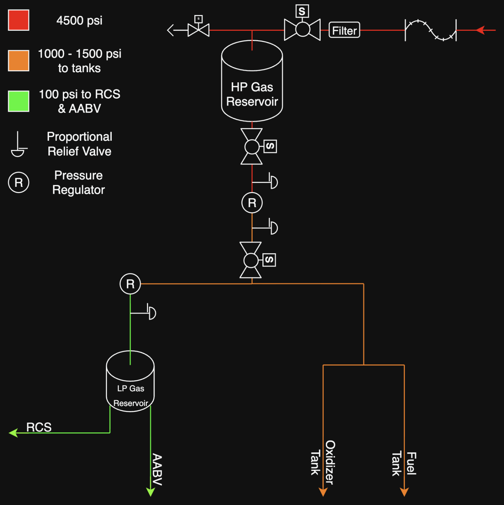
(a) High Pressure System
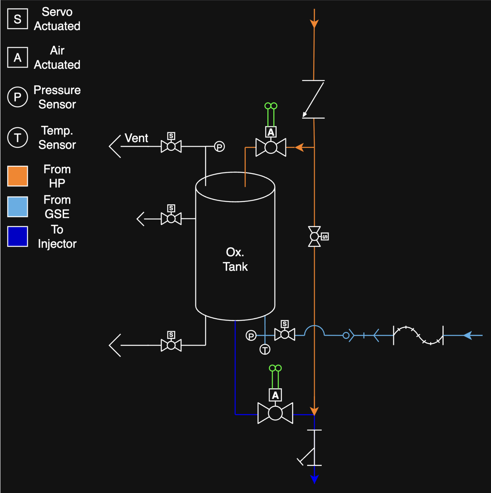
(b) Oxidizer systems
Figure 1.1: P&ID of high pressure and oxidizer systems.
1.2 Oxidizer Selection
The selection of propellants is one of the most consequential decisions in system design as it establishes the basis upon which nearly every subsequent engineering choice is made. The propellant combination determines not only performance parameters, like specific impulse and thrust, but also tank materials, pressurization schemes, injector design, ignition method, and ground handling procedures.
Before evaluating candidates, it is necessary to establish the criteria against which they were judged. For a 200 kg VTVL hopper with a 3 kN engine and estimated 1 minute flight duration, the following factors were considered in descending order of importance.
Safety and handling characteristics dominate the selection for this club without dedicated handling and storage support. Propellants must be non-hypergolic (eliminating the possibility of unintended ignition), low in acute toxicity (permitting handling without specialized protective equipment), and compatible with common materials (to avoid exotic alloys or coatings). Cryogenic propellants, while ideal in many ways, introduce handling complexity, boil-off losses, acquisition complexity, and require storage solutions that are impractical for GRP.
Availability and cost logically follow for a project that will consume propellant during numerous cold-flow tests, hot-fires, development campaigns, and flight attempts. Propellants available from standard chemical suppliers are strongly preferred.
System simplicity directly influences development time and cost. Self pressurizing or easily pressurized propellants eliminate the need for turbo machinery, reducing the engine to a pressure-fed architecture with less complexity and opportunities for failure. Propellants that remain liquid at or near ambient temperature simplify tank insulation requirements and ground support equipment.
Engine thrust requirement evolved much during the early design process. Initial sizing assumed 1.5 kN based on a 1.5×thrust-to-weight for a 100 kg wet mass. Subsequent trajectory optimization and control analysis increased this to 2.5 kN to provide adequate authority for aggressive maneuvering during flight. Later, when the team shifted aims to competing in CPLC, this thrust was revised to 3 kN to meet the challenge requirements. The selection criteria remain unchanged by this thrust increase, but it does affect mass flow rates, tank sizing, and margins throughout the system.
Given these requirements, N2O stands above other candidates due to is availability from automotive supply shops, easy storage requirements, self pressurization, and lastly its well established heritage as the oxidizer of choice for hobbyist rocketry.
1.3 Two-Phase Nitrous Oxide
N2Os most noteworthy property is its relatively high saturation pressure at reasonable temperatures. As seen in Figure 1.2, saturation pressure at 0C is about 2 Mpa or 300 psi, and increasing rapidly with subsequent heating. This property can be both a boon and bane, depending on the context.
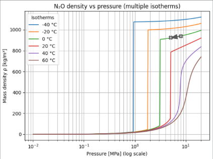
Figure 1.2: Nitrous Oxide density vs pressure, multiple isotherms.
This property is very advantageous for reducing complexity because it does not necessitate additional pressurization or pumping to achieve sufficient flow rates between onboard tanks and the engine. However, because combustion chamber temperatures are usually large enough and low enough pressure, N2O is expected to vaporize at some point and to some volume fraction before exiting flow controlling geometry (i.e. the injector); this makes mass flux prediction extremely difficult. This very topic is the motivation of this work.
Consider the two situations in figure 1.3. The first shows a low vapor pressure fluid where the downstream pressure is greater than the vapor pressure and the second shows a high vapor pressure fluid whose vapor pressure is greater than the downstream pressure. Propellants like liquid oxygen are much more like the first case but N2O is much like the second.
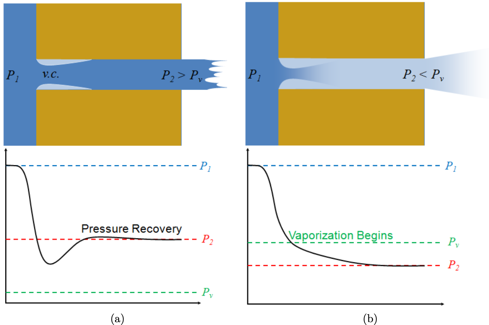
Figure 1.3: Visualization of two fluids: (a) a low vapor pressure fluid that exits the geometry as a liquid, (b) a high vapor pressure liquid that exits the geometry as a gas or two-phase mixture. Copied from Waxman, 2014.
While Halo does not use flow controling geometry in its injector, other rockets such as our high altitude “Altaris” rocket do. Additionally, this high vapor pressure is leveraged in our throttles that use the cavitating venturi effect to limit flow rate while minimizing pressure losses.
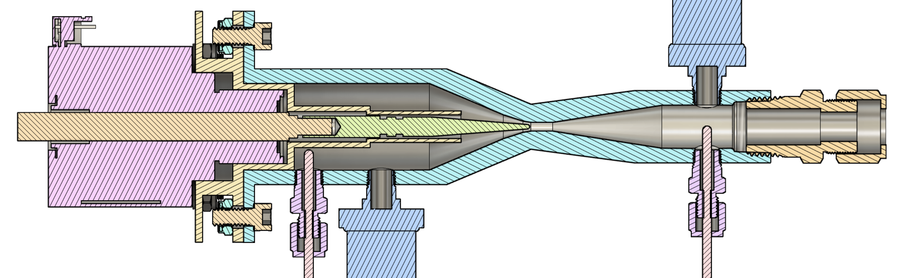
Figure 1.4: Halo cavitating venturi.
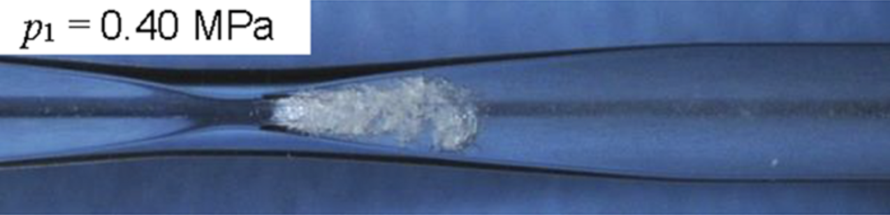
Figure 1.5: Example of cavitating venturi adapted from Soyama et. al., 2016.
Figure 1.4 shows one of two cavitating venturi designed for Halo. It uses a pintle (in green) precisely controlled by a linear stepper motor (in pink and orange) to control flow rate through restriction. Interestingly, because of particular geometry, flow rate is linear with pintle stroke and therefore should be easily predicted and, since trust is linearly related to mass flow rate, thrust is linearly related to this pintles stroke.
An aspect of why flow can be linearly dependent on pintle stroke is due to a “choking” effect that this device has on the flow. Because vapor can condense at any point in the expansion section it acts as one would expect choked flow would be; it maintains the same mass flow rate below a critical downstream pressure. This is something most conventional throttle valves, such as butterfly valves, cannot offer and was important to us because without the ability to diligently characterize the flow through each flow geometry using CFD or empirical testing, we could not accurately predict mass flow rate based on throttle position alone.
Another advantage is that the much more compressible gas in the flow serves to damp engine vibrations that propagate through the propellant in the feed lines. While it might seem like a trivial problem, it turns out that vibrations in liquid engines are really significant and depending on geometry and fluid architecture can be bad enough to cause uncontrollable oscillations. At best these oscillations extinguish the engine, but at worst can cause excessive pressures or forces that lead to “unplanned disassembly”, so to speak.
1.4 Predicting Mass Flow Rate
For applications to the above subjects I hope that it is clear how important predicting mass flow rate is both for design of components as well as predicting engine performance. This is the goal of this project: to accurately predict mass flux of a high vapor pressure liquid through any given geometry where the downstream pressure is less than the vapor pressure of the fluid.
2. Existing Models
2.1 Empirically Derived Models
Semi-empirical analytical models exist to the effect of predicting the mass flux through very particular geometries such as sharp edged inlet and outlet channels with given L/D. The thesis by Banjamin Waxman, 2014 contains a wonderful review on injector flow rate modeling which I read carefully as part of this project, therefore some key models mentioned there are summarized here.
Single phase incompressible is nearly the simplest possible model. It states that the mass flow rate through any orifice is:
where \(\dot{m}\) is mass flux, \(C_d\) is coefficient of discharge, \(A_2\) is the orifice area, and \(\Delta P\) is the pressure differential across the orifice. Further refinements of this include accounting for compressibility effects, frictional losses, etc.
Equilibrium models assume that the liquid and vapor phases are in thermodynamic equilibrium at every point in the flow (not always true). The Homogeneous Equilibrium Model is the simplest of these models and assumes there is no slip between the phases at all and that the flow is isentropic. The mass flow rate is determined as follows:
\[
\dot{m}_{\mathrm{HEM}} = C_d A \rho_2 \sqrt{2(h_1 - h_2)}
\]
where \(h_2\) is the downstream enthalpy and \(h_1\) is determined by:
\[
h_1 = h_2 + \frac{1}{2}u_2^2
\]
As I will address multiple times during this work, it is (surprisingly) often not the case that the fluid is in thermodynamic equilibrium.
Non-equilibrium models are models that assume there is some lag before the liquid begins to change phase; the liquid is said to be in a metastable state and is in thermodynamic dis-equilibrium because it is under the saturation dome but is still all liquid. Figure 2.1 shows some paths that the fluid might take on a p-rho graph.
The metastable region shown is a representation of some places on the graph that the fluid might exist as all liquid, while still being under the saturation dome.
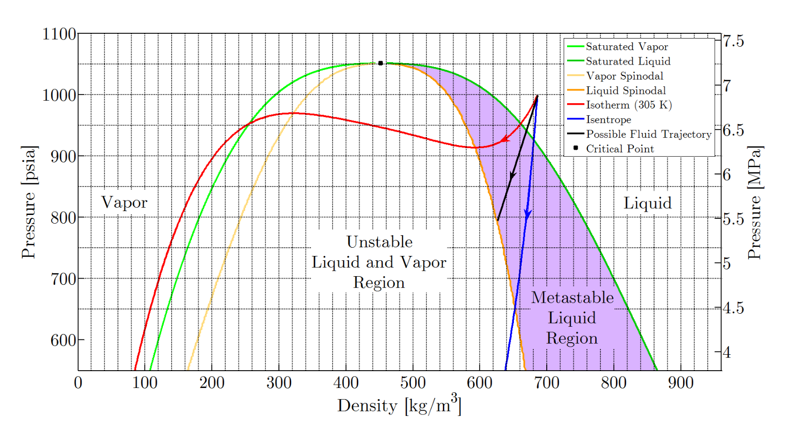
Figure 2.1: Metastable liquid under the saturation dome. Copied from Waxman, 2014.
The simplest non-equilibrium model is one that assumes there is slip between phases, but the vapor fraction is fixed and remains the same through the entire flow. One such model is that by Burnell, who says the maximum or critical flow rate is given by:
where \(C\) is an empirically derived coefficient that represents the superheating of the fluid as it enters a metastable state and/or a decrease in temperature during the expansion process and therefore a decrease in the vapor pressure.
Generalized non-equilibrium models allow for both the slip of phases and the evolution of the phase change. One such model is proposed by Dyer et al., who says that non-equilibrium effects are mostly caused by superheating of the liquid during expansion and finite vapor bubble growth rate. They propose an analytical model that combines the SPI and HEM models:
where \(\kappa\) is an analytical correction parameter that is a function of pressure differential and other flow variables. For more detail I cannot recommend Waxman's chapter two, “Injector Flow Rate Modeling” more.
The paper by Songtao et. al., 2019 takes these analytical methods even further and proposes an alaytical equation that can be used in 1D to numerically solve for the pressure drop through a these small geometries. It incorporates bubble dynamics and establishes some critical pressure and length at which flow suddenly flashes from its metastable state to a large vapor fraction mixture some distance from the vena contracta, labled “v.c.” in figure 1.5. I spent a considerable amount of time trying to understand the math, but got only far enough to know that I did not make much progress towards understanding the methods, even with several hours of Professor Bennet's time.
3. COMSOL
With the preceding information and motivations in mind, I originally planned to attempt an application of the method proposed by Songtao et. al. and solve for the location of this critical point in a flow of nitrous oxide. The hope was to leverage mass flux data from Waxman's thesis to guess-and-check for this critical point. Safe to say this did not get very far once I started trying to replicate the math. Therefore, I refocused my efforts to COMSOL where I hoped to again use the data to tune an empirical parameter in the model that would encapsulate the metastability of the flow.
The objective was to create a two-phase heat transfer and fluid flow multiphysics that would not only handle the two dimensional turbulent flow field but also the mass transfer between phases, modified by this aforementioned parameter. I chose COMSOL because I wanted to become familiar with the tool and I knew it provided users with ways of inputting custom equations.
I started by doing the simple single-phase tutorials for laminar flow and turbulent flow. Once I had mastered these studies, I wanted to venture into the multiphase world. The first runs I did were steady, single phase flow, laminar and turbulent. For whatever reason I didn't save any images nor the project files, but these first runs were critical in understanding how numerical solvers like to converge, what kinds of boundary conditions are easy or harder to solve, and what kinds of strategies one can employ when a simulation is not converging. COMSOL offered an intuitive UI for me to explore numerical solvers and helped me gain critical intuition.
Because of COMSOL I know that pressure inlet pressure outlet boundary conditions are hard for numerical solvers. I also know that in COMSOL, if I am having convergence issues (which happens often), refining the mesh or adding ramped inlet or outlet conditions can help. I also learned about parametric sweeps to determine what values of particular variables cause the simulation to blow up. I learned techniques when making geometry to help with computation time and convergence such as chamfering or filleting sharp corners and running antisymmetric simulations whenever possible. While these are valuable skills, I also learned more generalizable ones like establishing a repeatable workflow; a skill that served me well with OpenFOAM simulations that don't have a UI. I often find myself following a similar workflow in OpenFOAM as in COMSOL: geometry and meshing, boundary conditions, study parameters, run, view results, debug, etc.
Something I certainly did not understand at the time of making my first COMSOL studies was that turbulent physics' is challenging to use with stationary studies. This is not something I realized until far into my OpenFOAM work but in retrospect may have caused many of the struggles I had with COMSOL. The reason is that turbulence is a naturally chaotic process and turbulence models introduce instabilities into the governing equations on purpose. Because of these instabilities, this can cause stationary simulations to never converge or, if they do, converge on some nonphysical average of the turbulence.
When I felt ready to tackle multiphase work, I began by doing a small literature search for “multiphase COMSOL” or “cavitation using COMSOL”, but only found papers that handled acoustic cavitation or single bubble dynamics. I then turned to the user guide and application libraries and realized that COMSOL does not have a built in cavitation or flashing model meaning that I would need to apply the reactive flows, heat transfer, fluid flow, and more studies all at once. Unfortunately, this was too much for me. While this was a failure in respect to multiphase flows, this was a valuable experience because it helped me visualize the flow field around the inlet and around the various tutorial geometries; I found this all to be very insightful for developing intuition about fluid flows.
Figure 3.1: COMSOL time dependant study of injector-like geometry, t=0.3s.
4. OpenFOAM vs. COMSOL
4.1 FVM vs. FEM
At a fundamental level, OpenFOEAM differs from COMSOL in that OpenFOAM uses the Finite Volume Method (FVM) whereas COMSOL uses the Finite Element Method (FEM). The aim of both methods is to take the continuous flow domain and discretize it. The FVM method breaks the domain into many small polyhedron (volumes with flat faces), then applies conservation laws on the governing equations through each volume. This compares to FEM where the whole field is discretized into points that are used to create a system of equations for the field which is then solved all together. This difference matters enormously. In a way, FVM is inherently conservative; mass, momentum, and energy are balanced between adjacent cells because whatever flux leaves one cell must enter its neighbor. FEM does not have this guarantee by default.
Another difference is the way that advection & diffusion is handled. FVM simply uses the components of flow at each cell face in the direction of fluid motion and advected properties can be accounted for by weighing contribution from upwind and downwind cells. The system of equations created in FEM are not dependent on flow direction, and therefore require extra steps to determine the effects from upwind and downwind elements. This can cause instabilities, particularly when flow velocities are higher (spurious oscillations).
5. Introduction To OpenFOAM
Open-source Field Operation And Manipulation (OpenFOAM) is a software package written in C and C++. To understand the rest of this work, it will be important to first understand the basic OpenFOAM structure; what follows is an introduction to OpenFOAM case structure, capabilities, and constraints.
An OpenFOAM “case” is a directory that holds all subdirectories, run files, and outputs related to the simulation. Cases must always have constant, system, and time subdirectories.
The system directory contains, at minimum: controlDict; used to set necessary parameters like start time, end time, and solver, as well as optional parameters like enabling adjustable time step and specifying optional outputs, fvSchemes; used to set which schemes to use when converting PDE terms into finite-volume algebraic equations, and fvSolution; used to set what schemes should be used when solving the discretized equations.
The constant directory contains constants used during the simulation such as material properties and geometry. The constant/polyMesh directory contains all the information about your mesh and its boundary types.
The time directories are named according to their associated time and contain files like “p” and “U” that store the named variable for every finite volume in the mesh.
(a)
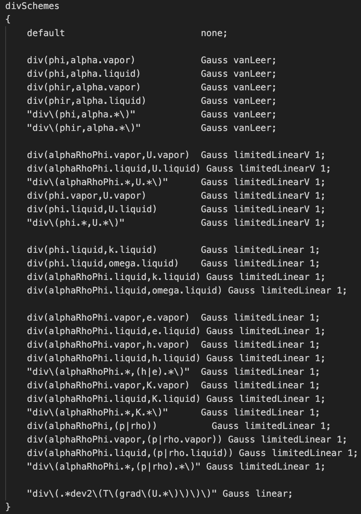
(b)
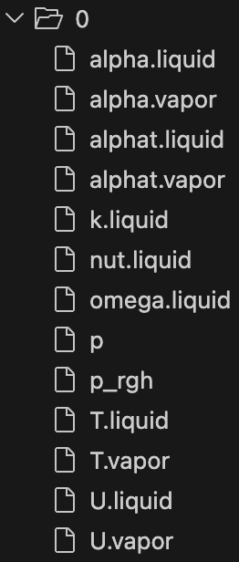
(c)
Figure 5.1: (a) general OpenFOAM case structure, (b) div schemes function in fvSchemes for my flashing case, (c) my 0 time directory for my case.
5.1 Finite Volume Schemes
The PDEs that OpenFOAM solves must, of course, be discretized. The “fvSchemes” dict file is used to set default and specific schemes for use on each type of term. As discussed previously, OpenFOAM is just solving the Gauss-Ostrogradsky divergence theorem or as I know it, the control volume method. The quantities advected by a flow field at a face must be interpolated from the upwind cells. The fv schemes are how those interpolations are done. Every scheme balances three fundamental aspects of the simulation:
Accuracy refers to how close the numerical result is to the real analytical solution. The higher the order of the scheme, the fewer nearby cells must be read to approximates the gradient at each cell. This is advantageous when you have smooth gradients, but disadvantageous when you have very steep gradients because the solver can overshoot or oscillate.
Stability refers to how well the solution converges. Unstable schemes can have uncontrolled oscillation that blow up the solution. Classically the more accurate the scheme is, the less stable it is.
Bounded refers to to how well a scheme can prevent physically impossible values through relaxation factors and clipping. They essentially sacrifice accuracy for convergence.
Choosing the right scheme is quite challenging considering that there are nearly twenty schemes to choose from for divSchemes alone. For this reason I had AI populate the fields as a stop gap. As seen in figure 5.1b I am using vanLeer for all the volume fraction properties and limitedLinear for nearly all the rest. These are good general selections since vanLeer is a Total Variation Diminishing (TVD) scheme meaning that it actively damps oscillations. This is essential for fields like volume fraction that can jump between nearly 0 and 1 very quickly; vanLeer can prevent overshoots. limitedLinear is also a safe choice since it is TVD and is more bounded than upwind or linear. The modifier 1 for all the values is the limiter coefficient with 1 being all of the scheme and lower numbers meaning more diffusive but less oscillatory. If I was having issues with unphysical oscillations I could turn some of these values down to help diffuse that.
6. Meshing
Meshing in COMSOL or Fluent is integrated into the software however OpenFOAM has much more limited in-software capability. There are functions such as blockMesh and snappyMesh that can help with rudimentary meshing operations but the lack of immediate visualization makes these options unhelpful; particularly for the present case.
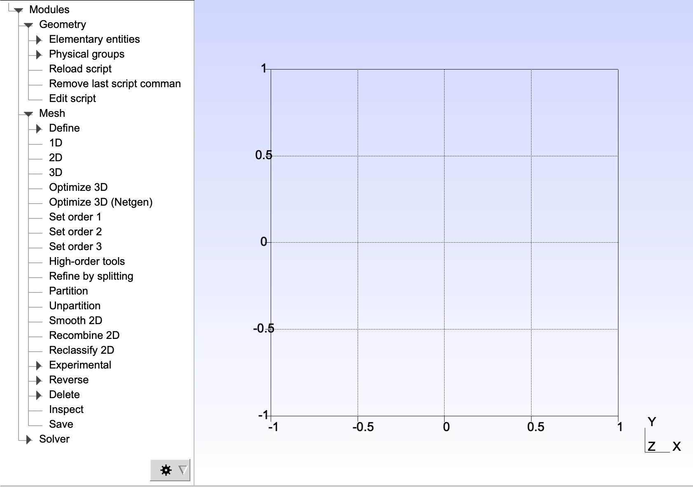
Figure 6.1: Blank gmsh GUI.
One has the option to also import a mesh into OpenFOAM from several sources such as ANSYS Fluent or, as in this study, gmsh. Gmsh is a standalone, open source program developed to help create and visualize meshes. In addition to visualization tools, the program allows users to directly modify the C++ script that is used to build the mesh. While the program has a GUI that allows users to click buttons that change the mesh, each button just appends the associated command to the end of script so I opted to modify the script directly. To say that this process was difficult would be an understatement. The short of the long of the script is: I create points that bound my 2D geometry including small chamfers at the inlet/outlet, I create lines that connect the points, I create a surface bounded by that line, I extrude that surface (which extrudes the bounding lines and points), I name the surfaces and volume as “inlet”, “outlet”, etc., then I make several bounding boxes used to refine the mesh in particular areas.
For a time I thought that COMSOL's meshing capabilities would be good to use in OpenFOAM, however I quickly realized that COMSOL meshes are not directly compatible with OpenFOAM, requiring modification before import. COMSOL meshes are well optimized for FEM simulations which is different from the kind of meshes that work well for FVM simulations.
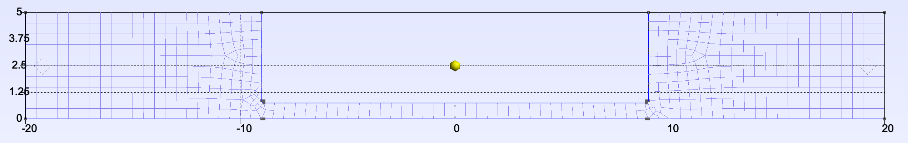
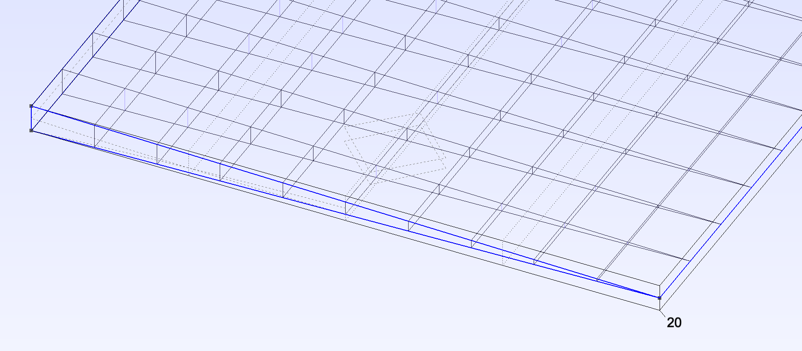
Figure 6.2: Attempt at making an antisymmetric mesh in gmsh.
A key difference between FVM and FEM meshes stems from the fact that FVM handles surface fluxes therefore necessitating the existence of volumes. In order to do a 2D or antisymmetric simulation, one must make a 1 cell thick plane or wedge as seen in figure 6.2. The wedge was nigh impossible to do in gmsh. When rotating the plane to create the wedge, gmsh would create a mystery surface of 0 area between the line that rotates about the axis and itself which I did not find a way to delete or be prevented for being created (the line just near the “20” in figure 6.2. For this reason, I decided to focus on making a full 2D geometry at the cost of higher computation in exchange for my sanity.
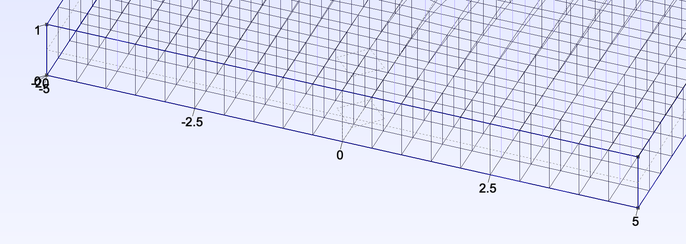
Figure 6.3: Cell volumes for 2D mesh.
As seen in figure 6.3, the 2D mesh is just a 2D mesh layer extruded by exactly 1 cell everywhere. To ensure that the simulation does not treat these front and back surfaces as walls, there is an “empty” boundary type that tells the simulation that there are no fluxes through those front and back surfaces. After many versions, my final bounding geometry is shown in figure 6.4.
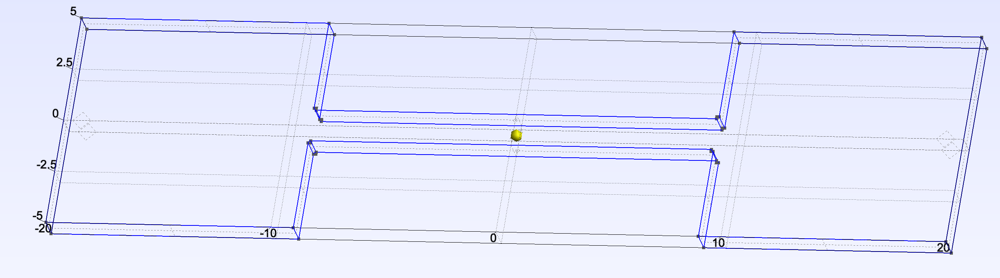
Figure 6.4: Final 2D mesh bounds.
7. OpenFOAM Environment Setup
Through a different research project I have access to UCSB General Research and IT High Performance Computing (GRIT HPC). Foreseeing that some of these simulations might require a lot of compute, I took some time to setup OpenFOAM in HPC using the VSCode server interactive application.
Installing OpenFOAM is as simple as cloning the gitLab repository then compiling the code. Compiling code means changing it from the human readable format to binary files the computer can read and execute. Since OpenFOAM is a fairly large software, this takes quite some time. Thinking ahead, I decided to try to poke around some of the files and made some copies and modifications of my own within the package contents. Unfortunately, when the compiler got to this part of the package it noticed the changes, did not compile any of the solvers and silently moved on. All this to say for the first week of using the software I was constantly ruining into the strangest errors until I realized my mistake!
Because OpenFOAM is nothing more than a collection of command line tools, getting all the required tools to work together was also a challenge. To take advantage of the increased compute power available to me I needed to setup multi threading; where a process is split up and solved on multiple cores, in parallel, at once. The tool used to do this is called Message Passing Interface (MPI) and was particularly challenging to setup within the permissions of my account on HPC.
8. OpenFOAM Simulation
This section will be broken down by runs. These runs represent nothing more than the distinction between some change in the simulation; perhaps a different boundary condition or more refined mesh. For brevity, I have summarized my early runs which were going wrong mostly due to me learning the tool.
8.1 Tutorials
After getting the software running, the first test was to run one of the pre-compiled tutorials. The first tutorial I ran was “dam break four phase laminar” which is, as the name implies, four phases sloshing in a tank. This took quite a long time to run on just on four cores: upwards of three hours. See results of the first four timesteps in figure 8.1.
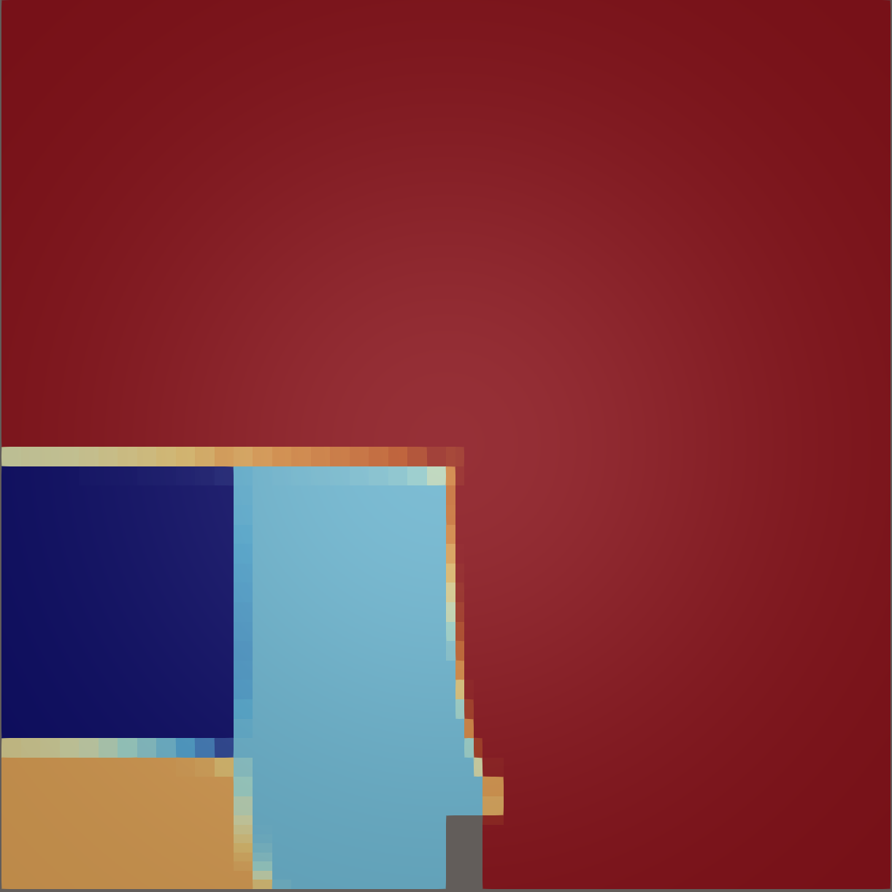
(a) t = 0.05(b) t = 0.1(c) t = 0.15(d) t = 0.2
Figure 8.1: Dam break first four time steps, substances delineated by color.
Encouraged by the success, I next ran the “throttle” tutorial. I realized that this throttle tutorial is just like what I want to do!
Figure 8.2: Throttle tutorial geometry.
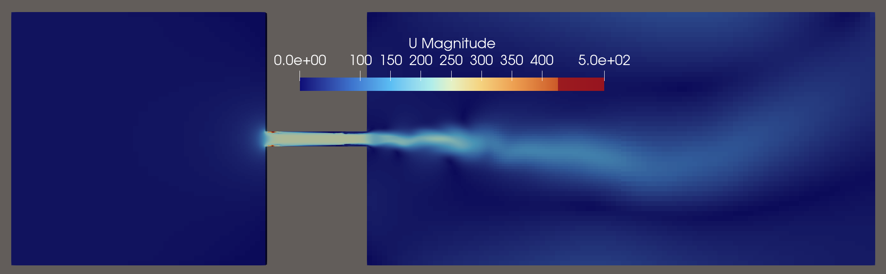
(a) U
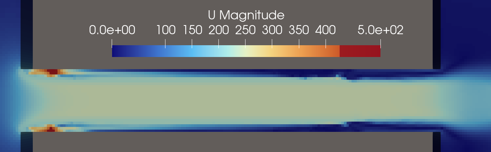
(b) alpha vaporFigure 8.3: Throttle tutorial at t=1s.
This tutorial applies the compressibleVoF module using the SchnerrSauer cavitation model. Results displayed in figure 8.3.
8.2 CompressibleVoF
The first successful run I made on my own was running my own geometry with all the same parameters as the “throttle” tutorial. See figure 8.4 for the geometry. This simulation ran from 0 to 1s using the compressibleVoF module with water and water vapor as the liquid and vapor phases. The inlet pressure is fixed at 100 psi, and the outlet is fixed at 14, or atmospheric pressure.
Table 1: CompressibleVoF run stats
Start, Stop Time
0s, 1s
Turbulence
RAS
Phase Change
On
Adjustable time
off
Inlet
100 psi
Outlet
14 psi
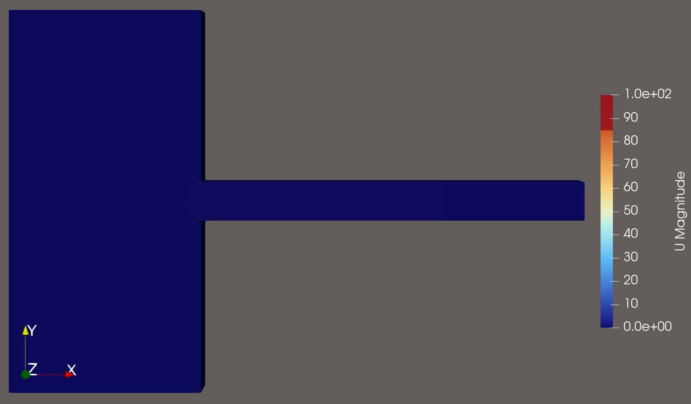
Figure 8.4: CompressibleVoF run 1 geometry.
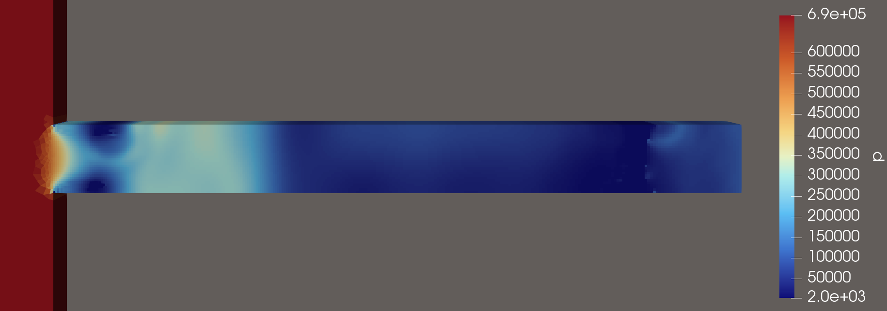
(a)
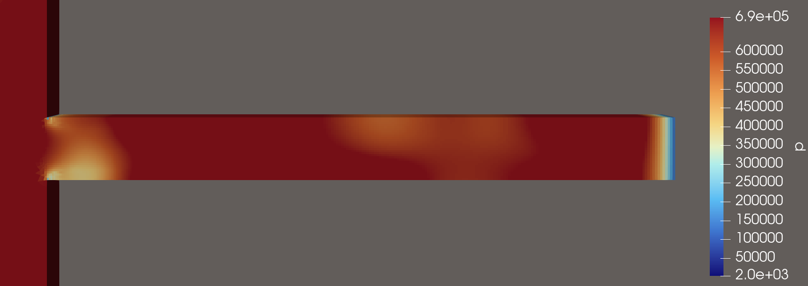
(b)
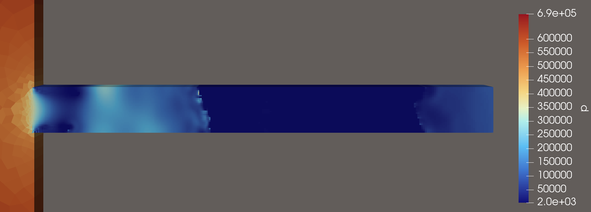
(c)
Figure 8.5: CompressibleVoF run 1 pressure oscillation between 0.43 and 0.45s.
I noticed a significant pressure oscillation in the simulation that seems very nonphysical and lessens as the simulation goes on. While I do not know the exact cause, I hypothesize that the compressible part of the solver is attempting to solve for the sudden acceleration of the fluid since it is initialized at 0 velocity but the fixed outlet pressure is being enforced and pushing back on the accelerating fluid. See subsequent time steps in figure 8.5. In retrospect, a ramped outlet pressure would have been a good choice here.
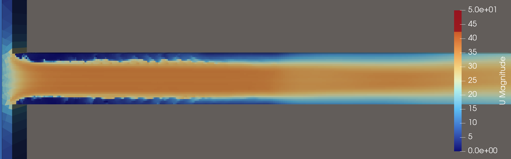
(a) U
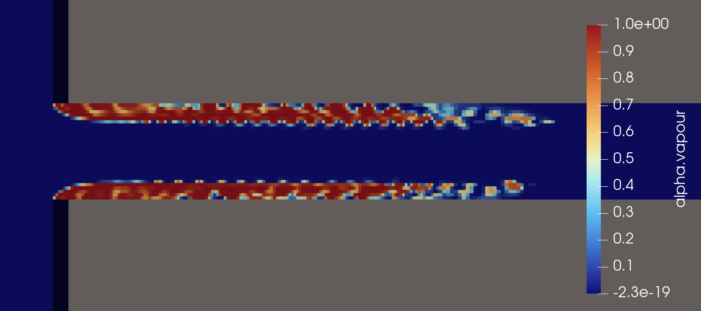
(b) alpha vaporFigure 8.6: First full run; U and alpha vapor at t = 1s.
After seeing this run I was a little concerned by the pocket or sheet of vapor that starts at the inlet and is entrained along the wall. From my COMSOL simulations I know that this kind of inlet causes a ventui shape at the inlet with low pressure just inside near the walls and pressure quickly recovering. This is not reflected in this run and I suspect that it has to do with the VoF aspect of the solver which favors regions of homogeneous phase due to the nature of the VoF method. Additionally my cell size is such that smaller bubbles than the ones seen at the end of the vapor pocket could not be resolved by more than one cell. Knowing what I know now (Appendix A), this is a reasonable result from a VoF simulation.
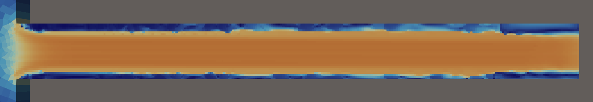
(a) U
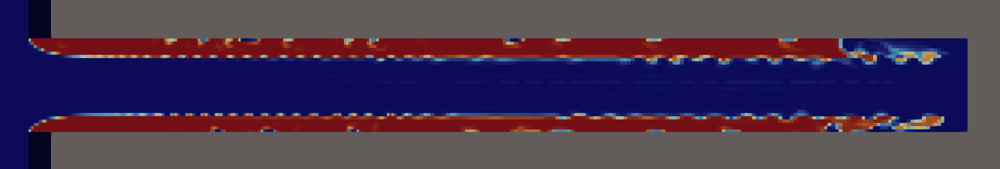
(b) alpha vaporFigure 8.7: Continued first full run; U and alpha vapor at t = 1.7s.
After these results, I ran another simulation that continued from 1 to 2 seconds as seen in figure 8.7. These results show the sheet of vapor continuing to flow down the channel, entrained by the flow. While the length of the vapor bubble is surprising, I think of running my hand under the water, entraining air bubbles that stick to the back of my hand. I suppose that this might be an accurate result, however it is hard to say without empirical data.
Recognizing that this is not the kind of result that I will need for my Nitrous Oxide simulations, I decided to try and use the multiphase Euler solver.
8.3 MultiphaseEuler
Now that I switched to multiphaseEuler module, for the reasons detailed in Appendix A the process is much more complex and therefore requires much more troubleshooting. All property values I used for Nitrous Oxide can be found in Appendix B.
My first few runs ran into a persistent problem where the simulation would start but soon after starting would crash with an error related to phase change. On run four, I noticed some kind of artifact of what I assume is the meshing as seen by the sharp and irregular phase change at the outlet in the far left middle of figure 8.8a.
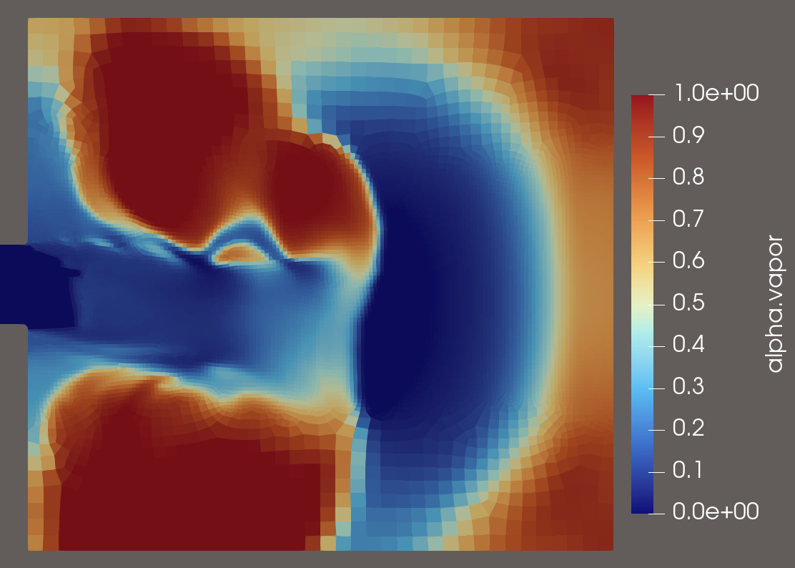
(a) alpha vapor
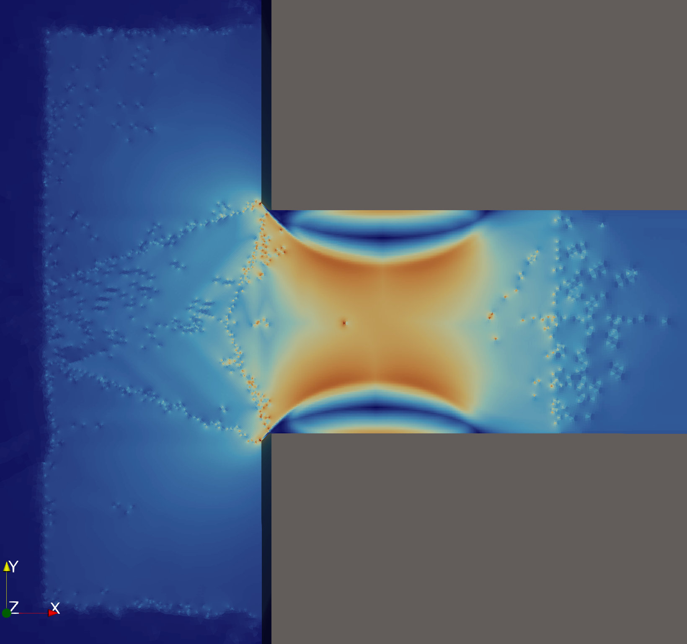
(b) Courant number
Figure 8.8
Thinking back to COMSOL, if I have persistent issues it can sometimes be caused by too coarse of a mesh therefore I majorly refined the mesh. But in run v5 the problem got even worse and the time step was getting very small. I then realized that refining the mesh in this case is actually detrimental because it requires that the solver to slow the time step way down to respect the max Courant number. In figure 8.8b, at the inlet the Courant number is reaching the maximum values long before cells elsewhere because I had refined the mesh to such a degree in that area. The courant number is defined as \(\mathrm{Co} = \frac{u \Delta t}{\Delta x}\)
8.4 Run 8 - 10
After facing so many instabilities and temperature blow-ups near startup I decided to just start the simulation as laminar, with no phase change, then resume as turbulent and phase change on. Additionally, I incorporated a linear ramp from equal to inlet pressure (600 psi) to 400 psi outlet pressure over five seconds. Even incorporating so many simplifications, the simulation still has a blow up in velocity as backflow through the outlet. I suspect that, as shown by the arrows in figure 8.9 middle image, the large outflow velocity causes high pressure locally at that part of the outlet, so the simulation induces a large low pressure above and below at the boundary (from the arrows) which allows flow back into the volume.
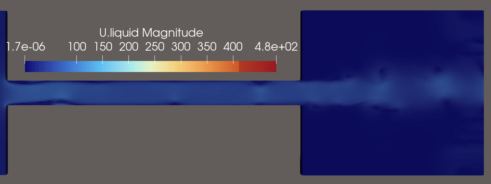
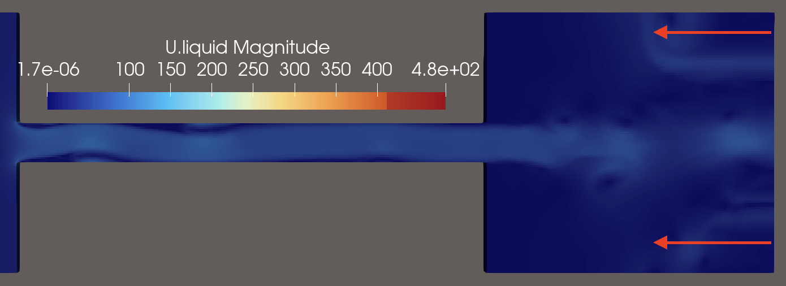
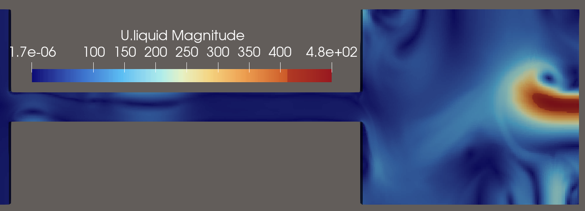
Figure 8.9: Run 8 at times t = 1.98, 2.64, 4.62.
8.5 Run 11
Table 2: Run 11 Stats
Run Time
14.35 hr
Start, Stop Time
0s, 4.25s
Turbulence
RAS
Phase Change
Off
Num Mesh Cells
64,406
Max Co
0.1
Inlet
600 psi
Outlet
Ramp: 600 to 400 psi, 1s
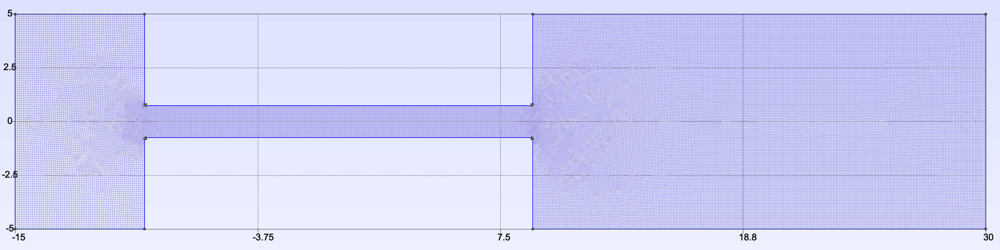
Figure 8.10: Run 11 mesh; throat size: 0.05.
I attempted to extend the outlet zone so that vortexes shed by the channel outlet can settle before exiting via the outlet. However, as seen in previous runs, the outlet gets some kind of terrible backflow causing massive velocities, as seen in figure 8.11. The max velocity is nearly 490 m/s causing the time step to fall to 1.7e-18 to respect the max Co of 0.1.
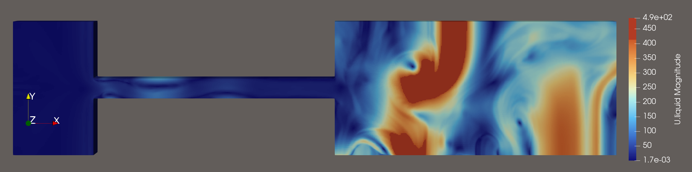
Figure 8.11: Run 11: U at t = 4s
I suspect that this is in part due to not having the correct outlet conditions, but also due to not having enough space for the vortexes to diffuse. As seen in figure 8.12, the vortex diffuses nicely until the vortex gets near the outlet. I think that the vorticity of the flow is causing/telling the outlet to backflow into the volume.
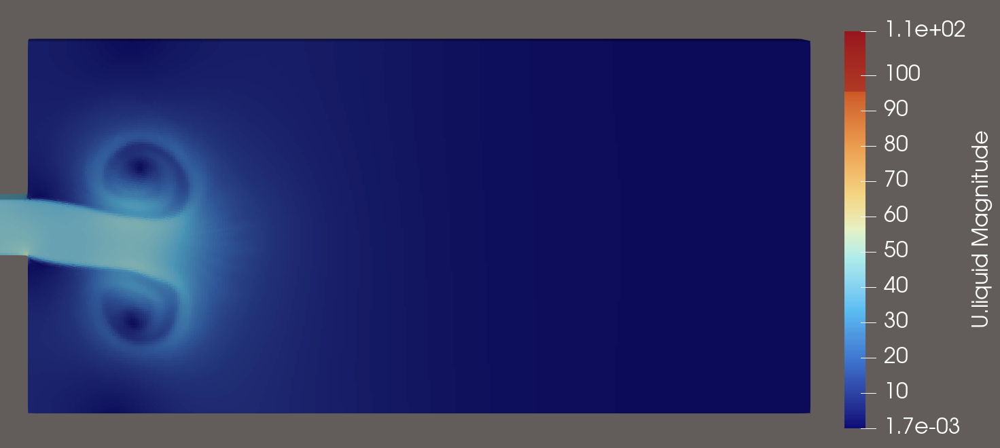
(a) t = 1.25
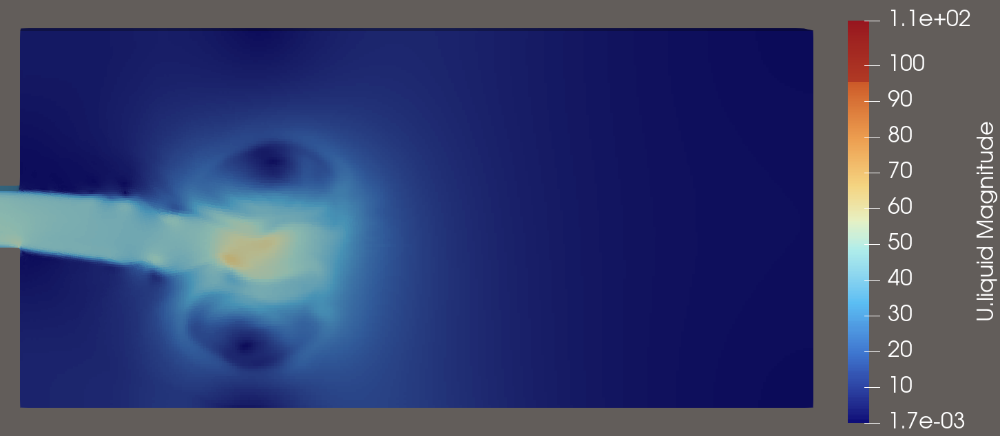
(b) t = 1.5
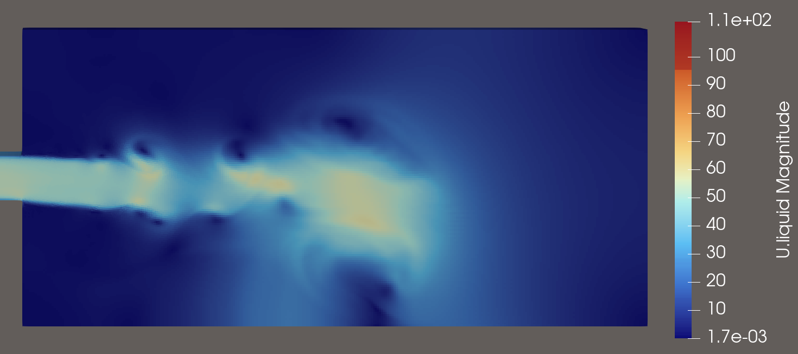
(c) t = 1.75
Figure 8.12: Diffusion of outlet startup vortex.
I actually have a lot of room to grow this mesh; here, I am only using about half of available compute. For the next run, I significantly increase the size of the outlet to allow the simulation to diffuse the turbulence before exiting the volume. Additionally, I am going to try to better prevent backflow through the use of boundary conditions.
8.6 Run 12
Table 3: Run 12 summary
Run Time
6.6 hr
Start, Stop Time
0s, 5s
Turbulence
RAS
Phase Change
Off
Num Mesh Cells
221,993
Max Co
0.5
Inlet
600 psi
Outlet
Ramp: 600 to 400 psi, 1s
This run I greatly increased the size of the outlet to allow for vortexes to diffuse before exiting as seen in figure 8.13. Additionally, I changed the inlet to totalPressure boundary condition (B.C.) from fixedValue to better represent an upstream pressure reservoir. I left the outlet pressure B.C. the same but adjusted the outlet velocity B.C. from pressureInletOutletVelocity (velocity simply follows pressure gradient) to zeroGradient to hopefully avoid massive backflow.
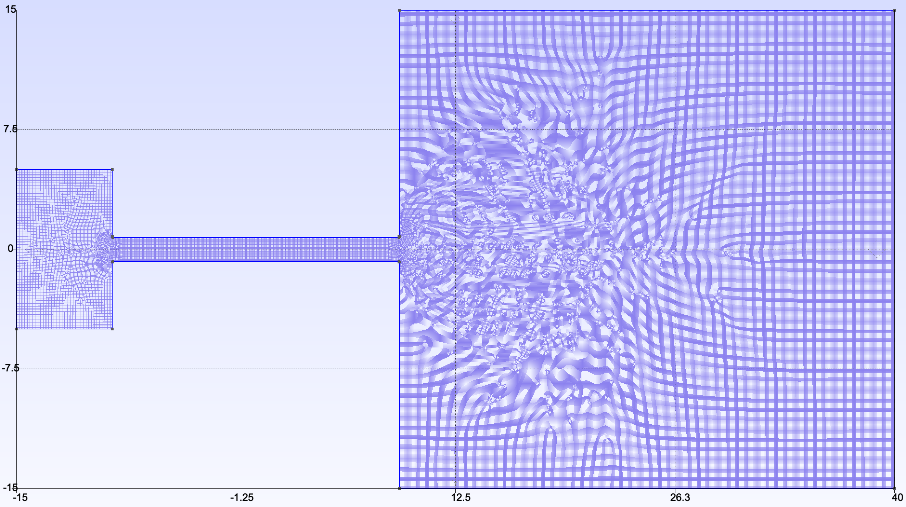
Figure 8.13: Run 12 mesh; throat size 0.05.
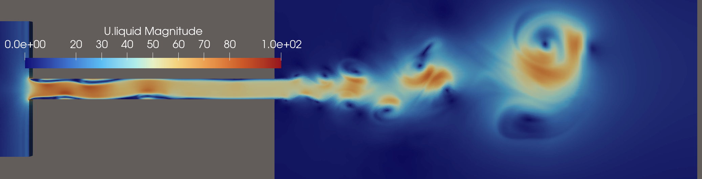
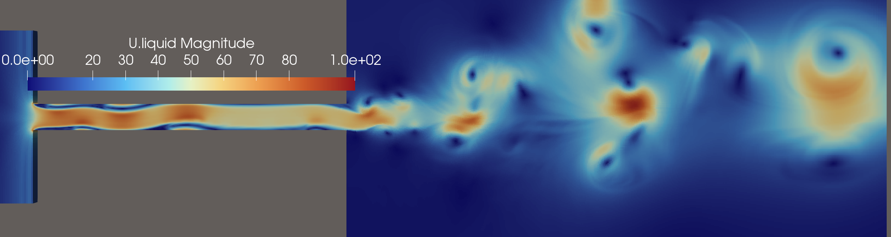
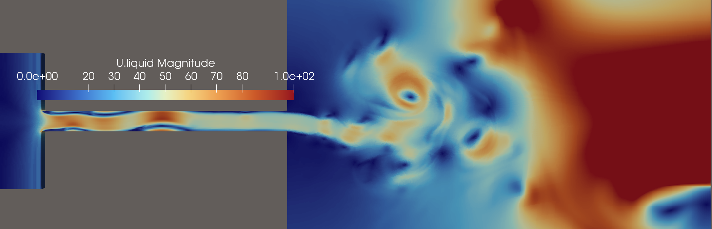
Figure 8.14: Run 12 at times t = 2.25, 2.75, 3.25.
Results show that the outlet B.C. still did not prevent backflow and reinforced the, turbulence leading to backflow hypothesis, as seen in figure 8.14. I think the biggest fix is to just move to outlet way downstream but will unfortunately increase computation time. As I learn more about boundary conditions I am realizing that I cannot just treat it as a boundary where the flow simply passes through without interacting, rather I must extend it so that flow can settle and turbulence can diffuse before passing through.
8.7 Run 13
Table 4: Run 13 Summary
Run Time
N/A
Start, Stop Time
0s, 5s
Turbulence
RAS
Phase Change
Off
Num Mesh Cells
397,044
Max Co
0.5
Inlet
600 psi
Outlet
Ramp: 600 to 400 psi, 1s
Rather than trying to force the B.C.s to copperate, I will attempt to work around the issue by modifying the mesh and setting the outlet B.C. to “totalPressure”, just like the inlet. In retrospect this is obviously the right thing to do because my flow velocity is so high the dynamic pressure can be quite low, causing an adverse pressure gradient at the outlet. An important caveat: the totalPressure B.C. is not exactly compatible with multiphase flows because it does not know how to compute velocity at the boundary and therefore must be specified as one or the other phase. Because I expect the flow to be all liquid at the inlet and nearly all vapor at the outlet, when I turn phase change back on, I will set the outlet to use the vapor values. For now I have set them to use the liquid values.
This run I have nearly doubled the outlet length as seen in figure 8.15. It is clear that this mesh is very large so I increased mesh size after x=50 in an effort to keep the size manageable; the file was more than 6.5 times larger than the previous mesh, now it is only half that.
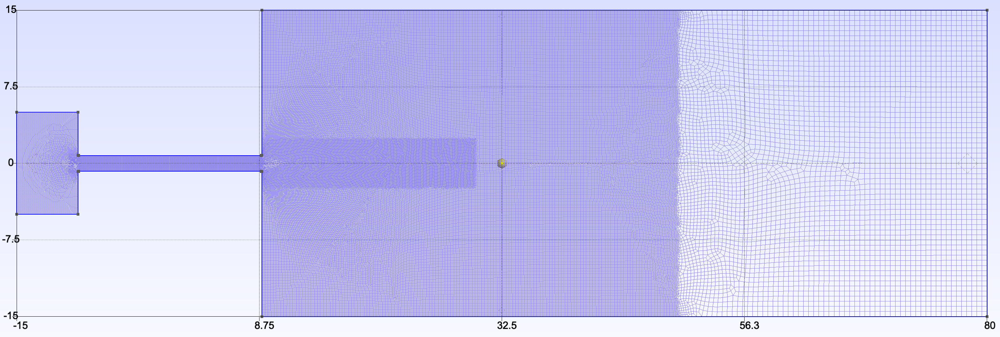
Figure 8.15: Run 13 mesh.
9. Concluding Remarks
To summarize, I learned COMSOL completely from scratch and applied it to solve new problems (rocket engine thermal analysis, inlet flow effects). I not only discovered OpenFOAM but actually used it for useful work. I have learned so much about numerical solvers and the strategies involved in trying to mathematically simulate fluids.
Unfortunately I was unable to get really meaningful results from OpenFOAM in the last few weeks before the end of the quarter, however this project will continue on beyond this report. I am proud of myself for learning one and a half new tools (COMSOL and half of OpenFOAM) and am confident in my ability to tackle new challenges in both programs.
For next steps, I am going to continue running OpenFOAM simulations and debugging along the way. My objective remains the same: develop a generalizable model for flashing flow in any small geometry. This would be massively helpful for the rocket club in designing on components. However it is getting to the point where runs are routinely taking several to tens of hours to run, but it is inevitable at this level. While I have yet to start on the phase change aspect of this in OpenFOAM, I used this project as an opportunity to learn of/learn more about flashing flows, cavitation, and metastable states. The learning required to write this report also helped to fill in some knowledge gaps on the subjects.
A. Multiphase Modules in OpenFOAM-12
It is worthwhile to make a comment about the multiphase modules in OpenFOAM-12. All available multiphase modules are:
compressibleMultiphaseVoF
compressibleVoF
incompressibleDriftFlux
incompressibleMultiphaseVoF
incompressibleVoF
multiphaseEuler
Any incompressible module is not relevant to the present study, so I will narrow to compressibleMultiphaseVoF, compressibleVoF, and multiphaseEuler. Aditionally, compressibleMultiphaseVoF is for multiple compressible, isothermal, immiscible fluids using VOF, while compressibleVoF is for just two. Therefore I will focus only on compressibleVoF and multiphaseEuler.
A.1 CompressibleVoF
The primary distinction between the two modules is the lack or lacktherof VoF. The volume of fluid (VoF) method is simply the incorporation of a scalar field alpha, between 0 and 1, which tracks the phase fraction at each cell and the rate at which alpha changes is dictated by a source term that is determined from the cavitation model. Mixture properties are governed by a weighted average of the property using alpha.
The Schnerr-Sauer model, published by Schnerr and Sauer in 2001, is derived from bubble dynamics and applied to a population of spherical bubbles. The assumptions are:
The liquid-vapor mixture consists of pure liquid containing a uniform number of spherical vapor bubbles per unit volume of liquid.
All bubbles in a cell have the same radius R at any given time.
Bubble growth and collapse are governed by a simplified Rayleigh equation (neglecting viscous, surface tension, and gas content effects).
The mixture is incompressible.
Thermal effects and non-condensable gas are neglected.
Additionally, the Schnerr-Sauer model expresses the bubble radius as a function of local alpha and bubble number density. This model is particularly advantageous to use over other available models because it not only has less parameters, but also has none that require empirical tuning.
Bubble number density (n_0) is the single parameter in Schnerr-Sauer and represents the number of nucleation sites per unit volume of liquid. This parameter effects both bubble number density and bubble size since larger values of n_0 mean more nucleation sites, more bubble generation, and smaller bubbles. The model is quite stable; as alpha approaches 1 (fully liquid) the evaporation source term goes to zero, and as alpha approaches 0 (fully vapor), the condensation source term goes to zero.
An important aspect of how both modules work is the PIMPLE algorithm, a combination of the Pressure Implicit with Splitting of Operators (PISO) and Semi-Implicit Method for Pressure-Linked Equations (SIMPLE) algorithms. PIMPLE is used for transient simulations that have large time steps or complicated coupling between pressure and velocity. For compressibleVoF, it proceedes as follows:
Compute cavitation source terms
Volume fraction updated
Mixture properties updated
Momentum equation solved for intermediate velocity field
Pressure equation is solved
Velocity updated using pressure
four - six repeated n times
entire loop is repeated j times using already solved for values
The the number n is usually three, and j is set greater than one only for cases where cavitation effects are strong. These j correction loops increase accuracy greatly, at the expense of computation time.
A.2 MultiphaseEuler
As the name implies, this module takes a Euler approach of tracking flow fields for each phase separately rather than tracking individual bubbles. The key step trick in this solver is the application of a phase fraction dependent averaging term to the equations, however this introduces a need for interfacial exchange terms. This added complexity makes multiphaseEuler good for resolving large flow fields of both phases, but can cause new issues.
PIMPLE is notably different from the compressibleVoF module the PIMPLE algorithm and proceeds as follows:
Phase fraction prediction is done using continuity and source terms using MULES
Per-phase enthalpy is predicted and used for temperature and other material property updates
Momentum equations solved for each phase
Pressure equations solved for each phase
Velocity updated using pressure
three - five repeated n times
Entire loop is repeated j times using found values
All properties are post processed
Where n and j are in the PIMPLE inner and outer corrects, respectively.
The multiphaseEuler solver was originally introduced by Kent E. Wardle and Henry G. Weller in 2013. It was originally made for use in designing liquid-liquid separation devices. The governing equations for mass and momentum conversation for each phase \(\kappa\) are:
where the density, phase fraction, and velocity for phase \(\kappa\) are given by \(\rho_\kappa\), \(\alpha_\kappa\), and \(u_\kappa\), respectively. \(\vec{F}_{D,k}\) is the inter-phase drag and \(\vec{F}_{s,k}\) is the surface tension.
B. N2O Properties
An important aspect of these simulations is simulating Nitrous Oxide. To do this I wrote a small Python script that uses the CoolProp package to get saturation temperature of nitrous oxide at pressures from one to 1000 psi at intervals of two psi. I then use the “table” function to linearly interpolate for any saturation temp in the phaseProperties dict file. For other common values such as density, Cp, and Cv I used CoolProp, but more niche values such as thermal diffusivity of gaseous Nitrous Oxide, I had to use AI to make educated guesses of the values.
Table 5: Liquid and vapor nitrous oxide properties used.
H. Soyama, J. Hoshino; Enhancing the aggressive intensity of hydrodynamic cavitation through a Venturi tube by increasing the pressure in the region where the bubbles collapse. AIP Advances 1 April 2016; 6 (4): 045113. https://doi.org/10.1063/1.4947572
Waxman, Benjamin S. An investigation of injectors for use with high vapor pressure propellants with applications to hybrid rockets. Stanford University, 2014.
Yin, Songtao, et al. “Critical flow leakage of a vapour-liquid mixture from sub-cooled water: Nucleation boiling study.” International Journal of Heat and Mass Transfer 146 (2020): 118807.
Schnerr, G. H., & Sauer, J. (2001). Physical and numerical modeling of unsteady cavitation dynamics. In ICMF-2001, 4th International Conference on Multiphase Flow, New Orleans, USA, May 27–June 1, 2001.
Guide, Programmer’S. “OpenFOAM.” no. June (2020).
Zimmerman, W. B. J. “Introduction to COMSOL multiphysics.” Multiphysics modeling with finite element methods. 2006. 1-26.
Wardle, Kent E., Weller, Henry G., Hybrid Multiphase CFD Solver for Coupled Dispersed/Segregated Flows in Liquid-Liquid Extraction, International Journal of Chemical Engineering, 2013, 128936, 13 pages, 2013. https://doi.org/10.1155/2013/128936